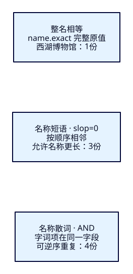
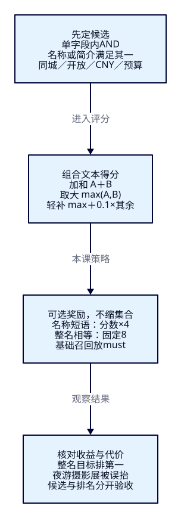

名称正好是目标，
怎样排到前面？
游客搜“西湖博物馆”，简介重复提及它的展馆，为什么胜过名称恰好相等的目标？本课让名称、短语与整名相等分别提供证据，比较怎样组合这些分数；同时保留“夜游摄影展”反超夜游活动的坏案例，检验奖励的代价。
学完能证明什么
- 用固定ID区分整名相等、名称短语、名称散词；解释为什么短语不等于完整名称。
- 从真实解释项核对加和、dis_max与奖励，指出名称加权改善和损害的各一个输入。
- 分别验证候选集合与排名，用REST、Java和观察窗重现should门槛、硬条件和故障恢复。
1. BM25有依据，业务意图还要表达
F18解释了词频、长度与稀有程度。它能说明某份简介为何得分更高，却没有告诉搜索引擎：“这次游客在找一个完整名称，而不是所有提及它的地方。”本课位于阶段四，用普通全文搜索组织多种证据；F17补全的weight与这里的查询boost是不同能力。
Elasticsearch负责根据索引词项判断匹配，并按查询规则评分。名称与简介属于不同字段，各有词频、长度和文档频率统计；同样包含五个字，不代表两边得分天然可比。Java把游客条件与规则表达成查询，业务数据库继续维护资料。ES不会因为字段叫name，就自动认为它更可靠；调权是我们提出的业务假设，必须用结果检验。
2. 先读资料，再猜谁应该靠前
下列12份均为虚构资料，价格和状态不是现实景点信息。固定HZ/SZ、open/closed、CNY，票价和预算用整数分。默认HZ、开放、0至10000分；九份通过业务条件，其中五份满足主查询的文本门槛。
| ID | name完整原文 | description完整原文 | 城市 / 状态 / 票价分 |
|---|---|---|---|
| hz-exact | 西湖博物馆 | 展品古迹 | HZ / open / 0 |
| hz-prefix | 西湖博物馆东馆 | 展品古迹 | HZ / open / 1000 |
| hz-scatter | 博物馆西湖馆 | 展品古迹 | HZ / open / 2000 |
| hz-description | 城市展馆 | 西湖博物馆 西湖博物馆 西湖博物馆 | HZ / open / 3000 |
| hz-both | 西湖博物馆分馆 | 西湖博物馆 西湖博物馆 | HZ / open / 4000 |
| hz-split | 西湖公园 | 博物馆展览 | HZ / open / 0 |
| hz-noise | 山林步道 | 徒步观鸟 | HZ / open / 0 |
| hz-photo | 夜游摄影展 | 室内静态照片 不提供水上体验 | HZ / open / 1000 |
| hz-cruise | 湖上巡航 | 夜游游船 登船活动 夜游夜景 | HZ / open / 5000 |
| hz-closed | 西湖博物馆 | 西湖博物馆 | HZ / closed / 0 |
| sz-exact | 西湖博物馆 | 西湖博物馆 | SZ / open / 0 |
| hz-expensive | 西湖博物馆 | 西湖博物馆 | HZ / open / 20001 |
主输入“西湖博物馆”的人工意图是找整名目标hz-exact。hz-both是名称与简介双命中的分馆；hz-description只有简介重复提及；hz-scatter名称含有全部字但次序不同。另一个意图“夜游”是寻找可参加的水上活动：hz-cruise符合，室内照片展hz-photo只是文字相关。两条意图用于分析本课得失，不是完整查询集或质量认证。
3. “精确”要先说明精确到什么
name和description使用standard tokenizer再lowercase；本课中文名称会切为单字。“西湖博物馆”实际得到西、湖、博、物、馆，位置0至4。与F18空格给定整词的简介不同，这次明确改用逐字基线来观察位置；没有把它称为最佳中文方案。分析方式会改变匹配与评分，不能拿两个课次的小数作横向质量比较。
整名相等是name.exact这个keyword子字段的完整原值相等；term不分析输入，本课也没给该字段normalizer。它能区分“西湖博物馆”与“西湖博物馆东馆”，但不能容忍任意空格、别名或繁简变化。这里是字符串规则，不是实体识别。
名称短语先分析输入，再要求这些位置按顺序相邻，slop显式设0；本样本没有同义词图或位置空洞。它不要求短语占满字段，因此东馆、分馆仍能命中。名称散词用match的AND要求五个词项都在name中，不限制顺序；“博物馆西湖馆”也符合，重复的馆并不让它更像目标实体。

4. f19-c01：建立本课固定前提
独立19219/tut-f19-attractions，ES9.4.0与Lucene10.4.0；一主零副本、strict、refresh=-1，无插件。索引本轮由9.4.0新建，显式BM25参数1.2/0.75/discount_overlaps=true挂到两个text字段；这些参数与当前BM25默认值相同，未修改别的索引。name.exact不需要额外写入：multi-field会索引同一个name的完整原值。
cd projects/travel-search
export ES_URL=http://127.0.0.1:19219
docker compose -f infra/f19/compose.yaml up -d es
bash infra/f19/wait.sh
# 已有本课索引先执行文末cleanup，再从01开始
bash labs/f19/01-levels.sh{
"settings": {
"number_of_shards": 1,
"number_of_replicas": 0,
"refresh_interval": "-1",
"analysis": {"analyzer": {"lesson_chars": {"type": "custom", "tokenizer": "standard", "filter": ["lowercase"]}}},
"similarity": {"lesson_bm25": {"type": "BM25", "k1": 1.2, "b": 0.75, "discount_overlaps": true}}
},
"mappings": {
"dynamic": "strict",
"properties": {
"attraction_id": {"type": "keyword"},
"city_code": {"type": "keyword"},
"status": {"type": "keyword"},
"currency": {"type": "keyword"},
"name": {
"type": "text",
"analyzer": "lesson_chars",
"similarity": "lesson_bm25",
"term_vector": "with_positions_offsets",
"fields": {"exact": {"type": "keyword"}}
},
"description": {
"type": "text",
"analyzer": "lesson_chars",
"similarity": "lesson_bm25",
"term_vector": "with_positions_offsets"
},
"ticket_price_fen": {"type": "integer"}
}
}
}01核对版本/插件，建索引并等green，Bulk12份逐项created、errors=false，显式refresh后_count=12；再核对mapping/settings、分析输入和存储词项。refresh=-1避免依赖操作快慢。每份资料用create写入，重复导入会条级409；资源已存在时，重复建索引返回400，不能忽略后继续当成新样本。
5. 完整值、相邻位置与散词的实际差别
01的四个搜索都带相同城市、open、CNY、非负票价与预算filter；前20、精确计数，按_score降序、attraction_id升序。下面给出名称AND的完整请求；其余完整请求分别见整名相等、名称短语、简介AND。整名搜索用constant_score包term，命中固定1分，便于只观察集合。
{
"size": 20,
"track_total_hits": true,
"explain": true,
"query": {
"bool": {
"filter": [
{"term": {"status": {"value": "open"}}},
{"term": {"currency": {"value": "CNY"}}},
{"range": {"ticket_price_fen": {"gte": 0, "lte": 10000}}},
{"term": {"city_code": {"value": "HZ"}}}
],
"must": [{"match": {"name": {"query": "西湖博物馆", "operator": "and"}}}]
}
},
"sort": [{"_score": "desc"}, {"attraction_id": "asc"}]
}| 文本条件 | 实际ID次序 | 解释 |
|---|---|---|
| name.exact完整值 | hz-exact | 名称恰好相等 |
| name短语 / slop0 | hz-exact → hz-both → hz-prefix | 允许名称尾部还有字 |
| name / match AND | hz-exact → hz-scatter → hz-both → hz-prefix | 不要求字词项的次序 |
| description / match AND | hz-description → hz-both | 目标本身没在简介写自己的名称 |
hz-split的name只有西、湖，description有博、物、馆：把两个字段各自AND后再OR，仍然没有一个字段满足五个词项，不能拼接过关。01还用完整phrase查询解释hz-scatter，matched=false；全部字都在，不等于短语成立。闭馆、异城与超预算的同名资料都被业务条件排除。
6. f19-c02：双字段命中应不应该加两次
bash labs/f19/02-weights.sh先把名称与简介各自的AND查询作为两个子句，权重都为1。内层bool.should配minimum_should_match=1，意思是至少一个字段满足，匹配子句得分加和。dis_max也接受至少一个子句匹配，但默认tie_breaker=0时只取其中最大分；显式0.1则取最大分，再加其余匹配分的十分之一。“取大”选的是每份文档中得分最大的子句，不是选一次字段后套用所有文档。官方dis_max说明与本课固定版本实测一致。
{
"size": 20,
"track_total_hits": true,
"explain": true,
"query": {
"bool": {
"filter": [
{"term": {"status": {"value": "open"}}},
{"term": {"currency": {"value": "CNY"}}},
{"range": {"ticket_price_fen": {"gte": 0, "lte": 10000}}},
{"term": {"city_code": {"value": "HZ"}}}
],
"must": [
{
"dis_max": {
"queries": [
{"match": {"name": {"query": "西湖博物馆", "operator": "and", "boost": 1}}},
{"match": {"description": {"query": "西湖博物馆", "operator": "and", "boost": 1}}}
],
"tie_breaker": 0
}
}
]
}
},
"sort": [{"_score": "desc"}, {"attraction_id": "asc"}]
}hz-both的名称分A≈2.1211295，简介分B≈4.7019653：加和≈6.823095，取大≈4.7019653，0.1补分≈4.914078。hz-description没有完整名称命中，简介分≈4.8380246；因此加和让双命中的分馆领先，取大让简介提及者领先，轻补又使分馆略微领先。三种方式都有同样五份候选，差别来自怎样合并证据。
02还把同样条件分别写成multi_match：best_fields对应每字段match后dis_max，most_fields对应加和，本课三个对照的次序与分数都与显式写法一致。AND在这些模式下作用于每一个字段，不是把所有字段当一个大字段；name^3表示把名称子查询乘3，含义不等于“名称必然比简介重要三倍”。best_fields完整请求、0.1补分、most_fields与官方模式说明可对照。
7. 奖励更具体的证据，保留基础候选
只取最高字段分仍不够：整名目标排在第三。tuned把dis_max/tie0.1作为must，保留五份基础候选；再用两个可选should奖励名称短语和整名相等。短语boost=4是把该短语子查询的原分乘4；constant_score则使name.exact相等固定贡献8，避免用keyword词频解释业务奖励。minimum_should_match=0明确两项奖励均可不满足。
{
"size": 20,
"track_total_hits": true,
"explain": true,
"query": {
"bool": {
"filter": [
{"term": {"status": {"value": "open"}}},
{"term": {"currency": {"value": "CNY"}}},
{"range": {"ticket_price_fen": {"gte": 0, "lte": 10000}}},
{"term": {"city_code": {"value": "HZ"}}}
],
"must": [
{
"dis_max": {
"queries": [
{"match": {"name": {"query": "西湖博物馆", "operator": "and", "boost": 1}}},
{"match": {"description": {"query": "西湖博物馆", "operator": "and", "boost": 1}}}
],
"tie_breaker": 0.1
}
}
],
"should": [
{"match_phrase": {"name": {"query": "西湖博物馆", "slop": 0, "boost": 4}}},
{"constant_score": {"filter": {"term": {"name.exact": {"value": "西湖博物馆"}}}, "boost": 8}}
],
"minimum_should_match": "0"
}
},
"sort": [{"_score": "desc"}, {"attraction_id": "asc"}]
}| 模式 / 名称match权重 | 实际次序（本表省略hz-） |
|---|---|
| sum / 1 | both → description → exact → scatter → prefix |
| best / 1 | description → both → exact → scatter → prefix |
| tie / 1 | both → description → exact → scatter → prefix |
| tuned / 1 | exact → both → prefix → description → scatter |
| tuned / 3 | exact → both → prefix → scatter → description |
真实完整query的_explain中，hz-exact三项非零贡献约为2.2787993＋9.115197＋8=19.393995；短语原分与名称AND分在这个样本恰好相同，并非普遍恒等。hz-both约12.758207，hz-prefix约9.96526，两者没有整名8分。解释树的boost叶子可能还包含F18讲过的BM25兼容因子2.2，不能把叶子一律当成业务乘数；应先读根和子查询贡献。
{
"both_combination": {
"field_scores": [
2.1211295,
4.7019653
],
"sum": 6.823095,
"best": 4.7019653,
"tie": 4.914078
},
"exact_contributions": [
{
"value": 2.2787993,
"description": "max plus 0.1 times others of:"
},
{
"value": 9.115197,
"description": "weight(name:\"西 湖 博 物 馆\" in 0) [PerFieldSimilarity], result of:"
},
{
"value": 8.0,
"description": "ConstantScore(name.exact:西湖博物馆)^8.0"
}
]
}将输入换成“西湖 博物馆”，分析后的五个字和短语位置相同，未归一的name.exact却不再等于原值：hz-exact正好少8分，分馆再次领先。这是精确字符串规则的边界，不能悄悄把“去空格”当成ES自动行为。完整请求可复现。所有分数仅用于当前语料/分片/版本，验收看相对次序和解释结构，不要求跨环境小数逐位相同。
8. 调权的代价：摄影展为什么反超夜游活动
nameWeight只改变name的match，不改变简介、短语4倍或整名固定8分。主查询把它从1改3，hz-scatter便从最后升到简介提及者之前；改到50仍是这个次序，只把名称贡献继续放大。它没有新增候选，仍可能降低第一屏质量。
更直接的反例是输入“夜游”，先用best关闭短语和整名奖励，隔离名称权重：权重1时hz-cruise≈5.9299626，领先hz-photo≈4.3481293；权重3时摄影展≈13.044387反超；权重50约217.40643，活动仍约5.9299626。两份都包含字面文字，但人工意图是参加水上活动，名称不能替代语义与类别判断。3已经对这个输入过强，50不是一条通用禁线。
02也实际运行了“夜游”的tuned/权重1：摄影展获得名称短语奖励后同样领先。于是本课既展示主输入的改善，也暴露整套规则的退步，不能把tuned称为上线方案。两个意图没有调整集/留出集的统计意义；F22才系统评估。F20会引入点评与热度，但它们也需要约束，不能拿另一个加分掩盖召回或意图问题。
9. f19-c03：should是可选加分，还是入场门槛
bash labs/f19/03-gates.sh把同样的多字段文本仅放到外层should，旁边仍有业务filter，却没写minimum_should_match，会发生什么？该层有must或filter时，should默认门槛为0；只有should而无must/filter时默认才是1。这个规则看当前这一层bool，不是全树共享的总开关。官方bool说明可与本课反例对照。
{
"size": 20,
"track_total_hits": true,
"explain": true,
"query": {
"bool": {
"filter": [
{"term": {"status": {"value": "open"}}},
{"term": {"currency": {"value": "CNY"}}},
{"range": {"ticket_price_fen": {"gte": 0, "lte": 10000}}},
{"term": {"city_code": {"value": "HZ"}}}
],
"should": [
{
"dis_max": {
"queries": [
{"match": {"name": {"query": "西湖博物馆", "operator": "and", "boost": 1}}},
{"match": {"description": {"query": "西湖博物馆", "operator": "and", "boost": 1}}}
],
"tie_breaker": 0.1
}
}
]
}
},
"sort": [{"_score": "desc"}, {"attraction_id": "asc"}]
}实际返回九份：前五是原文本候选，后面hz-cruise、hz-noise、hz-photo、hz-split都为0分，按ID排列。山林资料matched=true并非ES算错；我们允许它只凭过滤条件进入。required模式在同一层显式minimum_should_match=1，恢复五份，山林的完整_explain改为matched=false、根分0。此处改变的是候选集合，不只是“增加一点相关性”。
tuned则已有must承担基础召回，should只负责奖励。把名称短语从should移到must，集合缩为hz-exact、hz-both、hz-prefix三份；hz-description与hz-scatter被排除。03使用完整强制短语请求，其余结构保持一致，未重复给同一短语计两次分。它可以是明确的产品规则，却不能称为保持召回的纯调权。闭馆、超预算、异城资料在tuned中仍matched=false；奖励不绕过filter。

10. 同样语义交给Java，不能悄悄换查询
沿用Boot4.0.8、Temurin25.0.4.1+1、官方Java API Client与Rest5 Client9.4.8、Wrapper3.3.4/Maven3.9.11。ES镜像自带JVM另记。接口固定F19索引、字段与六种模式；名称权重仅接受1至50整数，输入不能指定任意索引、字段或DSL。q保留原值，不暗中去空格。完整输入校验与Controller随工程提供。
public SearchRequest request(WeightInput input) {
Query name = Query.of(q -> q.match(m -> m.field("name").query(input.q())
.operator(Operator.And).boost(input.nameWeight().floatValue())));
Query description = Query.of(q -> q.match(m -> m.field("description").query(input.q())
.operator(Operator.And).boost(1.0f)));
Query combined = input.mode().equals("sum")
? Query.of(q -> q.bool(b -> b.should(name, description).minimumShouldMatch("1")))
: Query.of(q -> q.disMax(d -> d.queries(name, description)
.tieBreaker(input.mode().equals("best") ? 0.0 : 0.1)));
var bool = new BoolQuery.Builder()
.filter(f -> f.term(t -> t.field("status").value("open")))
.filter(f -> f.term(t -> t.field("currency").value("CNY")))
.filter(f -> f.range(r -> r.number(n -> n.field("ticket_price_fen")
.gte(0.0).lte(input.maxPriceFen().doubleValue()))))
.filter(f -> f.term(t -> t.field("city_code").value(input.cityCode())));
if (input.mode().equals("optional") || input.mode().equals("required")) {
bool.should(combined);
if (input.mode().equals("required")) bool.minimumShouldMatch("1");
} else {
bool.must(combined);
if (input.mode().equals("tuned")) {
bool.should(q -> q.matchPhrase(m -> m.field("name").query(input.q()).slop(0).boost(4.0f)));
bool.should(q -> q.constantScore(c -> c.filter(f -> f.term(t ->
t.field("name.exact").value(input.q()))).boost(8.0f)));
bool.minimumShouldMatch("0");
}
}
return SearchRequest.of(s -> s.index(INDEX).size(20)
.trackTotalHits(t -> t.enabled(true)).explain(true)
.query(q -> q.bool(bool.build()))
.sort(srt -> srt.score(sco -> sco.order(SortOrder.Desc)))
.sort(srt -> srt.field(f -> f.field("attraction_id").order(SortOrder.Asc))));
}结果要核对total/relation、完整原文、城市、票价分、状态、score和sort；不完整搜索或字段契约错误返回502。下面同时展示实际搜索、卡片投影和复用完整query的_explain。两次调用不是并发更新下的一张原子快照，本课固定资料且观察窗只读。
public Result search(WeightInput input) throws IOException {
var request = request(input);
var response = client.search(request, WeightAttraction.class);
if (response.timedOut() || response.shards().failed().longValue() != 0
|| response.hits().total() == null || !response.hits().total().relation().jsonValue().equals("eq"))
throw new AttractionSearchService.IncompleteSearchException();
var cards = response.hits().hits().stream().map(hit -> {
var s = hit.source();
if (s == null || !hit.id().equals(s.attractionId()) || s.name() == null
|| s.description() == null || !input.cityCode().equals(s.cityCode())
|| !"open".equals(s.status()) || !"CNY".equals(s.currency())
|| s.ticketPriceFen() == null || s.ticketPriceFen() < 0
|| s.ticketPriceFen() > input.maxPriceFen() || hit.score() == null
|| hit.explanation() == null || hit.sort().size() != 2)
throw new AttractionSearchService.IncompleteSearchException();
return new Card(hit.id(), s.name(), s.description(), s.cityCode(), s.ticketPriceFen(),
s.currency(), s.status(), hit.score(), hit.sort().stream().map(v -> (Object) v._get()).toList(),
tree(hit.explanation()));
}).toList();
// Both calls use the same complete query, including filters. No writes occur in this observer.
// They are separate requests, not one atomic snapshot under concurrent updates.
var explainRequest = ExplainRequest.of(e -> e.index(INDEX).id(input.explainId()).query(request.query()));
var explained = client.explain(explainRequest, WeightAttraction.class);
if (!INDEX.equals(explained.index()) || !input.explainId().equals(explained.id())
|| explained.explanation() == null)
throw new AttractionSearchService.IncompleteSearchException();
return new Result(response.hits().total().value(), response.hits().total().relation().jsonValue(),
response.took(), input, tree(request), tree(response),
"/" + INDEX + "/_explain/" + input.explainId(), tree(explainRequest), tree(explained), cards);
}非法输入400/INVALID_WEIGHT_INPUT；ES拒绝如缺索引502/SEARCH_BACKEND_REJECTED；连接或transport错误503/SEARCH_UNAVAILABLE；超时、分片失败或不完整字段502/SEARCH_INCOMPLETE。共享错误映射如下，真实超时与部分分片失败没有在本课构造，不能把代码防护写成已验收故障。
@ExceptionHandler({MethodArgumentNotValidException.class, HttpMessageNotReadableException.class})
public ResponseEntity<ApiErrors.ErrorBody> invalid(Exception error) {
return ResponseEntity.badRequest().body(new ApiErrors.ErrorBody("INVALID_WEIGHT_INPUT",
"请填写1至60字符关键词、HZ或SZ、非负整数分预算、1至50整数名称权重，并选择列出的模式与解释ID。"));
} @ExceptionHandler({IOException.class, TransportException.class})
ResponseEntity<ErrorBody> unavailable(Exception error) {
return ResponseEntity.status(HttpStatus.SERVICE_UNAVAILABLE).body(new ErrorBody("SEARCH_UNAVAILABLE",
"搜索连接暂不可用，请检查本机 ES 与服务端端点，再重试。"));
}
@ExceptionHandler(ElasticsearchException.class)
ResponseEntity<ErrorBody> rejected(ElasticsearchException error) {
return ResponseEntity.status(HttpStatus.BAD_GATEWAY).body(new ErrorBody("SEARCH_BACKEND_REJECTED",
"ES 拒绝搜索，请在本机核对本课索引、mapping 与服务端配置。"));
}
@ExceptionHandler(AttractionSearchService.IncompleteSearchException.class)
ResponseEntity<ErrorBody> incomplete(Exception error) {
return ResponseEntity.status(HttpStatus.BAD_GATEWAY).body(new ErrorBody("SEARCH_INCOMPLETE",
"搜索未完整完成或结果字段不符合契约，请检查 ES 与本课资料后重试。"));
}11. 在本机观察窗核对规则与代价
cd projects/travel-search/backend
# JAVA_HOME/PATH先选择JDK25
./mvnw -B -ntp clean package
ES_URL=http://127.0.0.1:19219 APP_PORT=18080 java -jar target/travel-search-0.7.0.jarbash labs/f19/04-java.sh
# 可选单次请求，不计92条教学HTTP
curl --fail-with-body -sS -X POST http://127.0.0.1:18080/api/attractions/weight-search -H 'Content-Type: application/json' --data-binary @search/f19/input-tuned.json打开http://127.0.0.1:18080/f19.html，先比较sum/best/tie/tuned，再改nameWeight；输入“夜游”分别比较best/1、best/3与tuned/1。检查卡片排序与人工意图是否一致。选hz-noise观察optional/required，选闭馆或超预算资料观察完整条件不匹配；零预算仅保留hz-exact，SZ仅sz-exact，海滩为零命中200。
每次提交均展示实际Java输入、序列化DSL、完整ES响应与卡片DTO，单份解释也使用同一完整query。摘要只列解释根的非零子项，ES可能展开加和；要判断字段、短语或整名来源，应展开完整树。条件改变与失败清空旧内容。浏览器经Java调用ES，不需要读者开发前端，ES端点与凭据保留在本机服务端；Pages只承载教程。
04将16组Java输入的实际搜索DSL与固定REST文件规范化比较，再重放搜索和解释；核对全部卡片、计数、次序和解释项。客户端float经double再序列化可能展开小数，比较结构与微小数值容忍，不把客户端结构冒充原始HTTP字节。两轮原始请求/响应与图解、阅读、真实观察窗记录分别保存。
固定版本依据与本轮实际边界
- BoolQueryBuilder.doToQuery组织各层布尔子句与门槛；DisMaxQueryBuilder.doToQuery传递tie_breaker；Lucene10.4.0 DisjunctionMaxQuery解释取大与其余补分。
- MultiMatchQueryBuilder.Type、MatchPhraseQueryBuilder和ConstantScoreQueryBuilder与本课显式请求对应。五个本地文件与官方v9.4.0字节一致，来源收据将固定源码与当前官方文档分列。
- 本课验证固定单分片样本的行为，不认证全站质量、性能、多分片统计或生产安全；没有热度、距离评分或F22评估。要求xhigh，但根入口无法设置/核验：作者写作及自审，无独立审阅代理。
12. 点名清理，重做时仍从同一前提出发
bash labs/f19/cleanup.sh
bash labs/f19/01-levels.sh
bash labs/f19/02-weights.sh
bash labs/f19/03-gates.sh
bash labs/f19/04-java.sh
# 结束；另关闭自己启动的Java
bash labs/f19/cleanup.sh
docker compose -f infra/f19/compose.yaml stop escleanup只DELETE tut-f19-attractions并GET确认404，不删除其他索引或数据卷。停止/重启容器不重置数据；完成清理后才可从01重新create。92条教学HTTP=01的16＋02的20＋03的8＋04的48；点名清理每次2条，探活、构建、Java内部请求、浏览器与作者附加故障另计。实验脚本是证据辅助，理解结果不以掌握测试工具为前提。
能力检查：先判断，再展开答案
1. 东馆能命中短语，为什么整名搜索不返回它？
短语只要求分析后五个位置连续，尾部还可有东馆；keyword完整值包含尾部文字，不等于西湖博物馆。两者不是同一种精确。
2. hz-split两字段合起来字都齐了，best_fields AND为什么不命中？
本课每个字段单独AND，再在字段子句间OR；没有一个字段包含全部五个词项。组合字段不是自动把词项拼成一个字段。
3. A≈2.1211、B≈4.7020，sum、best、tie0.1分别约多少？
分别约6.8231、4.7020、4.9141。这里两字段都匹配；只匹配一个时，其他字段没有补分。这改变组合分，不改变五份候选。
4. tuned把hz-exact排到第一，是否证明规则可上线？
不能。“夜游”中tuned/1也会奖励摄影展，背离活动意图；best从名称权重1到3同样退步。要保留坏案例，用更多标注与留出输入评价收益，不能只看主查询。
5. 山林0分却matched=true，为什么不是连接错误？
optional有filter，should默认门槛0，资料只凭业务条件进入。required在同层要求至少一个文本子句后才排除。零分可匹配；必须读完整规则。
6. 把短语should移到must，只是给它更高权重吗？
不是，它变为必需条件，五份候选缩成三份；简介提及者与散词资料被排除。应分别报告集合与排名变化。
7. 独立复现：输入增加一个空格，先预测再用两条路径证明
用“西湖 博物馆”、tuned/1，五份候选不变，hz-exact少固定8分，分馆领先；分别用spaced.json和input-spaced.json复现，再把解释ID选hz-closed确认奖励不能绕过open。只有能解释原始名称、token与完整query差异，才算完成。
实际陷阱
速记：规则要同时解释命中与名次
| 问题 | 本课可观察结论 |
|---|---|
| 整名 / 短语 / 散词 | 默认业务条件下1 / 3 / 4份；位置约束与字符串相等分开 |
| 字段组合 | 加和计全部匹配；dis_max取大，tie补其余；AND仍在每字段内 |
| tuned奖励 | 基础must＋可选短语4倍＋整名固定8；保持五份候选 |
| 名称权重 | 只乘name match；夜游从1到3已误抬摄影展 |
| should门槛 | optional九份，required五份；强制名称短语三份 |
| 判断依据 | 完整query、实际ID/次序/_explain、REST↔Java与坏案例 |
先确定谁能入场，再决定证据怎样加分；一条查询变好，必须连同退步一起解释。现在仍未表达点评质量与热度，下一课F20将比较这些业务信号怎样参与评分及何时压倒相关性。